Jamaal Glenn to Host Dinner for 2026 Marshall Memorial Fellows
A dinner for the new cohort and the relationships behind transatlantic exchange.
Read the full release →Press, speaking and events, and published work.
A dinner for the new cohort and the relationships behind transatlantic exchange.
Read the full release →New Robot Overlords cited Jamaal Glenn's analysis of AI-token allowances as a way to inflate headline compensation without adding cash or equity.
Read the full release →A conversation about ownership, financing, governance, and how groups of workers become groups of owners.
Read the full release →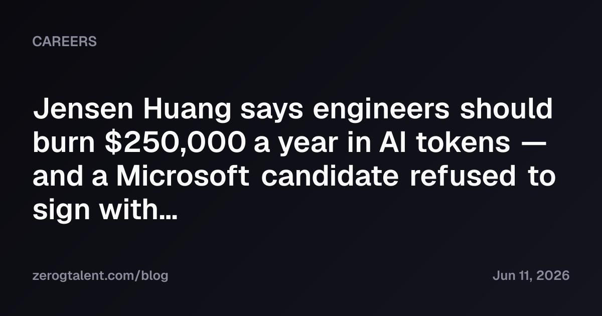
Zero G Talent cited Jamaal Glenn in Elena Petrova's analysis of compute credits as an emerging fourth pillar of technology compensation.
Read the full release →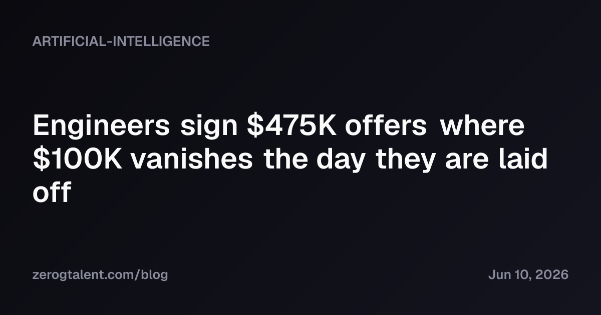
Zero G Talent cited Jamaal Glenn in David Yu's analysis of why AI-token allowances lack the vesting, portability, and residual value of equity.
Read the full release →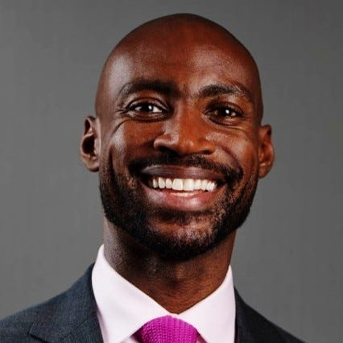
Finance, investing, entrepreneurship, education, and the judgments that shaped his career.
Read the full release →Who absorbs the cost of AI inference first, what enterprises should measure, and what happens when subsidies end.
Read the full release →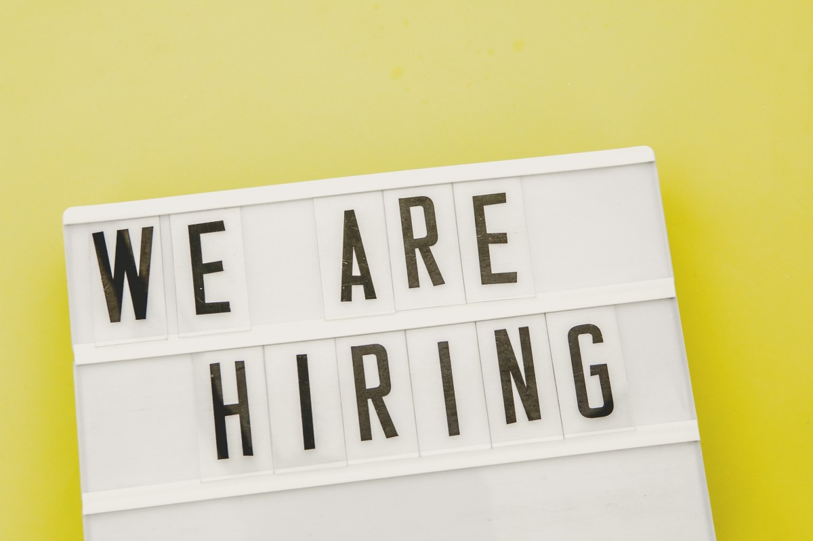
Why compute allowances can make an offer look richer without adding the cash or equity that compounds.
Read the full release →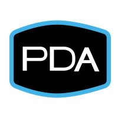
Leading communications and editorial work at the intersection of governance, strategy, and attention.
Read the full release →
Joining a national cohort of leaders working across sectors to expand access, opportunity, and the common good.
Read the full release →Joining a community of board members, executives, governance professionals, and educators focused on stronger board leadership.
Read the full release →
How changing technology and workplace models affect employees, organizations, and access.
Read the full release →Supporting an investigative newsroom focused on inequality and abuses of power.
Read the full release →Why The New China Playbook gives directors a less simplistic view of China and its economy.
Read the full release →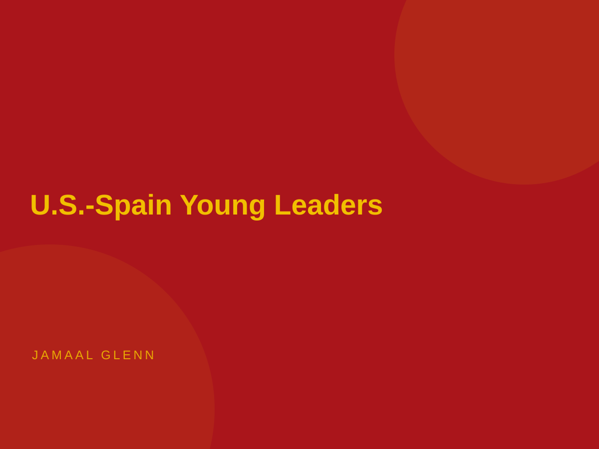
Joining American and Spanish leaders for cross-sector exchange and long-term relationship building.
Read the full release →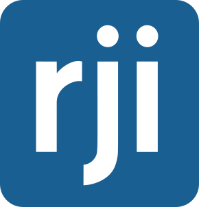
An audio playbook built around the organizational questions facing community news founders.
Read the full release →Why startups should begin board planning after their first institutional round.
Read the full release →
A practical agenda for cities competing for a newly mobile workforce.
Read the full release →Why governance needs independence, current skills, and directors prepared to challenge management.
Read the full release →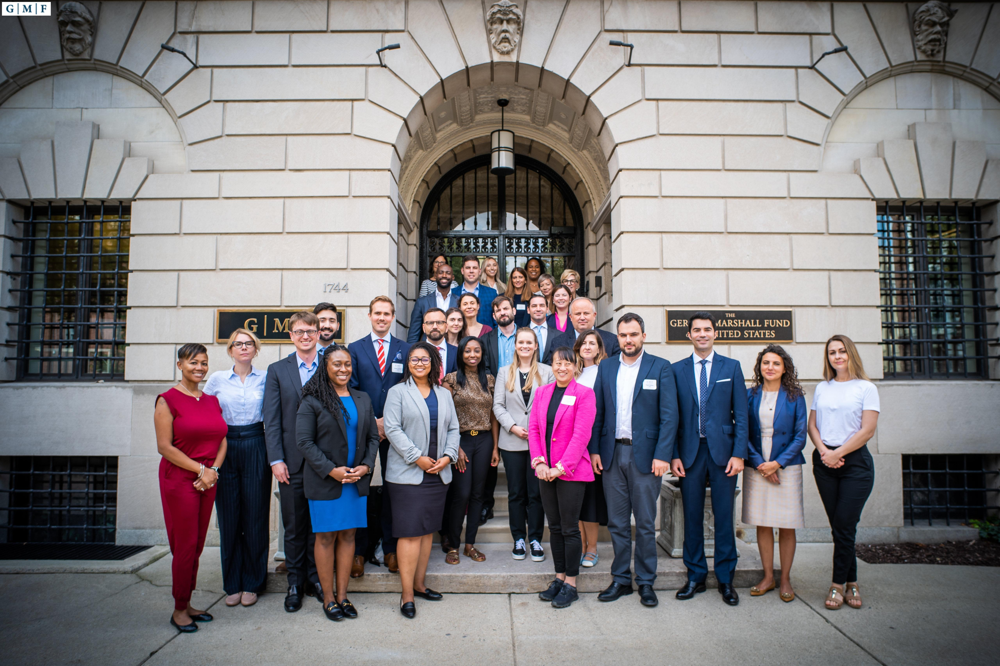
GMF's flagship program for leaders building transatlantic understanding and cooperation.
Read the full release →Leading board strategy and governance for investment in community-rooted news organizations.
Read the full release →Bringing media, finance, venture, and governance experience to independent local news.
Read the full release →Global perspective, cross-sector relationships, and a deliberate portfolio of professional experiences.
Read the full release →A transatlantic fellowship connecting urban leaders working across policy, innovation, and inclusive city development.
Read the full release →
A practical conversation about how early-stage investors evaluate ventures and work with founders.
Read the full release →Joining a selective community of emerging leaders working across international affairs.
Read the full release →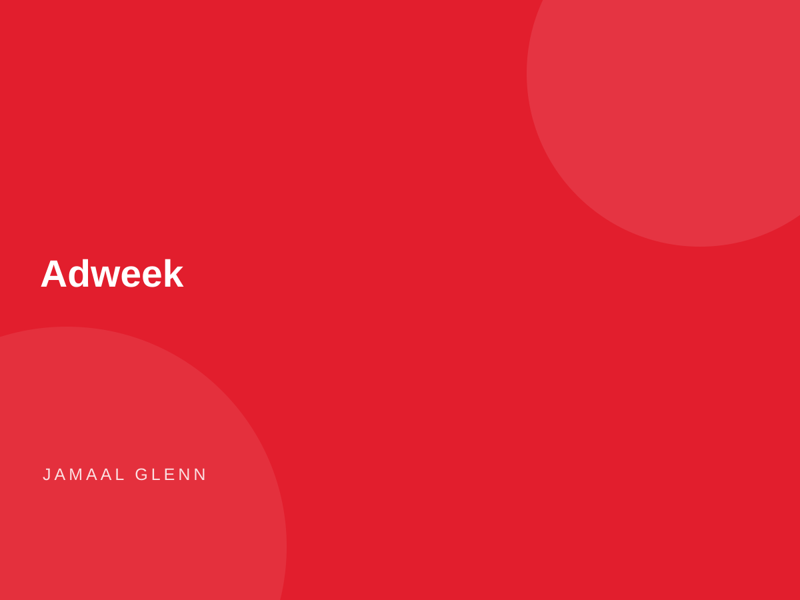
Why Google’s entry into podcasts matters for discovery, creators, publishers, and advertisers.
Read the full release →
Leadership across business, government, philanthropy, and public service at Kellogg’s BMA Conference.
Read the full release →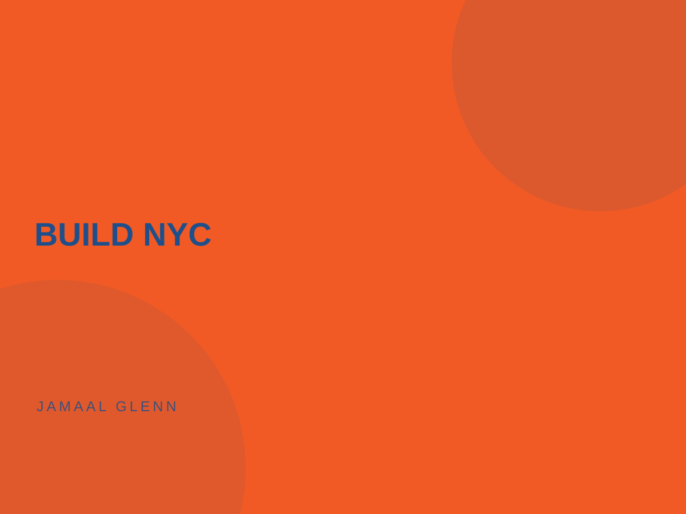
Supporting entrepreneurship education for New York City high-school students.
Read the full release →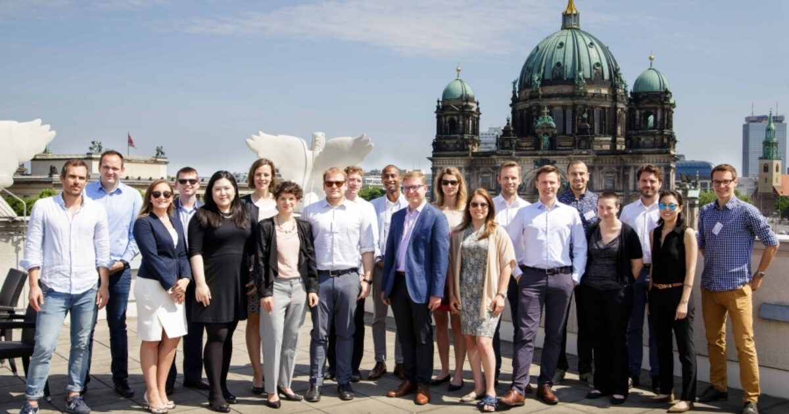
One of nine Americans selected for a U.S.-German dialogue on technology policy, privacy, cybersecurity, and innovation.
Read the full release →Joining a leadership program connecting diverse professionals across business, government, and civic life.
Read the full release →
Adding public-policy training to a career rooted in business, finance, technology, and media.
Read the full release →
A voicemail from Stanford GSB opens a new chapter spanning entrepreneurship, technology, investing, and media.
Read the full release →9 of 33 items shown